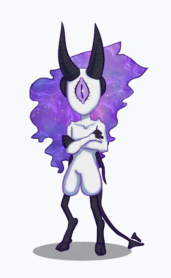

Welcome to the site!
This site is under construction, please come back later.
What's an Ukagaka/Ghost?
An Ukagaka, or ghost, is a computer mascot that can talk to you, manage a calendar, take out your recycling bin, and much more! Some can also interact with each other.
They run on the baseware SSP (Sakurascript Player) and originated as a Japanese program which can be downloaded on the left sidebar of this website here: ssp.shillest.net.
Ghosts I've Worked On
|
|
Zaiga

Zaiga is a ghost created for the 2020 Ghost Jam on the Ukagaka Dream Team Discord. Collaboration with nasaalving.
|
|
Gel

Gel is my personal project ghost of my original character from my dystopian cyberpunk works set in the fictional location Atlas City. Not yet released.
|